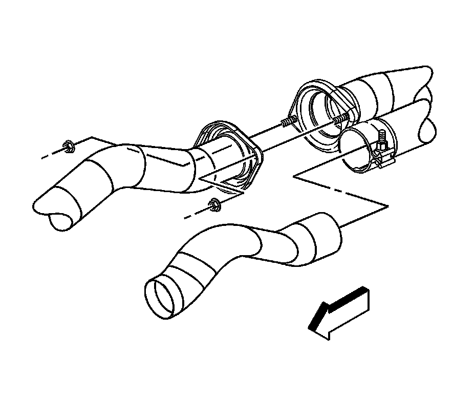
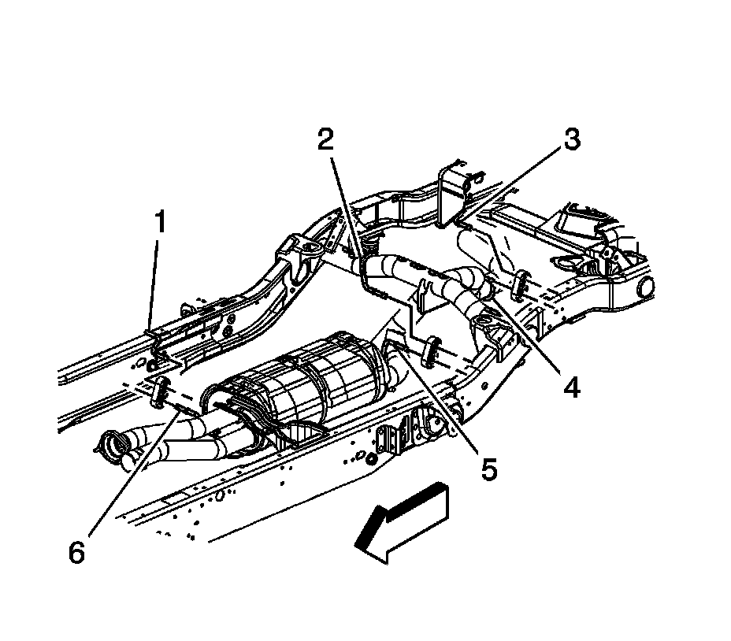

Muffler: Service and Repair
Muffler Replacement (2500)
Removal Procedure

1. Raise and suitably support the vehicle. Refer to Lifting and Jacking the Vehicle.
2. Remove the exhaust muffler to right catalytic converter nuts.
3. Loosen the exhaust pipe clamp at the left catalytic converter.

4. Lubricate the insulators where the muffler assembly hangers are inserted in order to ease in removal.
5. With the aid of an assistant, remove the insulators from the exhaust system hangers (4, 5, and 6).
6. Pull the muffler assembly rearward in order to separate the muffler from the catalytic converters. Once the muffler is separated from the converters, move and rotate the muffler towards the front of the vehicle, removing the muffler from the vehicle.
Installation Procedure
1. Lubricate the insulators where the muffler assembly hangers are inserted in order to ease installation.
2. With the aid of an assistant, install the muffler assembly. Rotate the muffler into position over the rear axle, move the muffler rearward, then forward installing the muffler to the catalytic converters.
3. Install the insulators to the exhaust system hangers (4, 5, and 6).
Notice: Refer to Fastener Notice.
4. Tighten the exhaust pipe clamp at the left catalytic converter.
Tighten the clamp to 44 N.m (32 lb ft).
5. Install the exhaust muffler to right catalytic converter nuts.
Tighten the nuts to 45 N.m (33 lb ft).
6. Lower the vehicle.